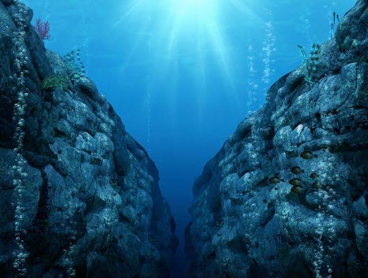
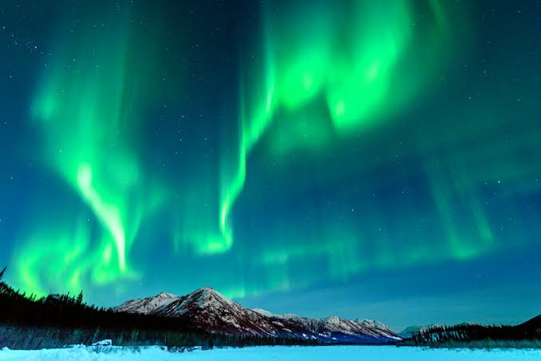

While Earth is only the fifth largest planet in the solar system, it is the only planet in our solar system with liquid water on the surface. Just slightly larger than nearby Venus, Earth is the biggest of the four planets closest to the Sun, all of which are made of rock and metal. Earth is the only planet in the solar system whose English name does not come from Greek or Roman mythology. The name was taken from Old English and Germanic. It simply means "the ground." There are, of course, many names for our planet in the thousands of languages spoken by the people of the third planet from the Sun.


With an equatorial diameter of 7,926 miles (12,756 kilometers), Earth is the biggest of the terrestrial planets and the fifth largest planet in our solar system. From an average distance of 93 million miles (150 million kilometers), Earth is exactly one astronomical unit away from the Sun because one astronomical unit (abbreviated as AU), is the distance from the Sun to Earth. This unit provides an easy way to quickly compare planets' distances from the Sun. It takes about eight minutes for light from the Sun to reach our planet.
As Earth orbits the Sun, it completes one rotation every 23.9 hours. It takes 365.25 days to complete one trip around the Sun. That extra quarter of a day presents a challenge to our calendar system, which counts one year as 365 days. To keep our yearly calendars consistent with our orbit around the Sun, every four years we add one day. That day is called a leap day, and the year it's added to is called a leap year. Earth's axis of rotation is tilted 23.4 degrees with respect to the plane of Earth's orbit around the Sun. This tilt causes our yearly cycle of seasons. During part of the year, the northern hemisphere is tilted toward the Sun, and the southern hemisphere is tilted away. With the Sun higher in the sky, solar heating is greater in the north producing summer there. Less direct solar heating produces winter in the south. Six months later, the situation is reversed. When spring and fall begin, both hemispheres receive roughly equal amounts of heat from the Sun.
When the solar system settled into its current layout about 4.5 billion years ago, Earth formed when gravity pulled swirling gas and dust in to become the third planet from the Sun. Like its fellow terrestrial planets, Earth has a central core, a rocky mantle, and a solid crust.
Earth is composed of four main layers, starting with an inner core at the planet's center, enveloped by the outer core, mantle, and crust. The inner core is a solid sphere made of iron and nickel metals about 759 miles (1,221 kilometers) in radius. There the temperature is as high as 9,800 degrees Fahrenheit (5,400 degrees Celsius). Surrounding the inner core is the outer core. This layer is about 1,400 miles (2,300 kilometers) thick, made of iron and nickel fluids. In between the outer core and crust is the mantle, the thickest layer. This hot, viscous mixture of molten rock is about 1,800 miles (2,900 kilometers) thick and has the consistency of caramel. The outermost layer, Earth's crust, goes about 19 miles (30 kilometers) deep on average on land. At the bottom of the ocean, the crust is thinner and extends about 3 miles (5 kilometers) from the seafloor to the top of the mantle.
Like Mars and Venus, Earth has volcanoes, mountains, and valleys. Earth's lithosphere, which includes the crust (both continental and oceanic) and the upper mantle, is divided into huge plates that are constantly moving. For example, the North American plate moves west over the Pacific Ocean basin, roughly at a rate equal to the growth of our fingernails. Earthquakes result when plates grind past one another, ride up over one another, collide to make mountains, or split and separate. Earth's global ocean, which covers about 71% of the planet's surface, has an average depth of about 2.3 miles (3.6 kilometers) and contains 97% of Earth's water. Almost all of Earth's volcanoes are hidden under these oceans. Hawaii's Mauna Kea volcano is taller from base to summit than Mount Everest, but most of it is underwater. Earth's longest mountain range is also underwater, at the bottom of the Arctic and Atlantic oceans. It is four times longer than the Andes, Rockies and Himalayas combined.
Near the surface, Earth has an atmosphere that consists of 78% nitrogen, 21% oxygen, and 1% other gases such as argon, carbon dioxide, and neon. The atmosphere affects Earth's long-term climate and short-term local weather and shields us from much of the harmful radiation coming from the Sun. It also protects us from meteoroids, most of which burn up in the atmosphere, seen as meteors in the night sky, before they can strike the surface as meteorites.
Our planet's rapid rotation and molten nickel-iron core give rise to a magnetic field, which the solar wind distorts into a teardrop shape in space. (The solar wind is a stream of charged particles continuously ejected from the Sun.) When charged particles from the solar wind become trapped in Earth's magnetic field, they collide with air molecules above our planet's magnetic poles. These air molecules then begin to glow and cause aurorae, or the northern and southern lights. The magnetic field is what causes compass needles to point to the North Pole regardless of which way you turn. But the magnetic polarity of Earth can change, flipping the direction of the magnetic field. The geologic record tells scientists that a magnetic reversal takes place about every 300,000 years on average, but the timing is very irregular. As far as we know, such a magnetic reversal doesn't cause any harm to life on Earth, and a reversal is very unlikely to happen for at least another thousand years. But when it does happen, compass needles are likely to point in many different directions for a few centuries while the switch is being made. And after the switch is completed, they will all point south instead of north.
Click the button below to reveal a fun fact!
Credit: https://science.nasa.gov/sun/facts/
Credit: https://www.teachstarter.com/us/blog/fun-facts-about-earth-for-kids/